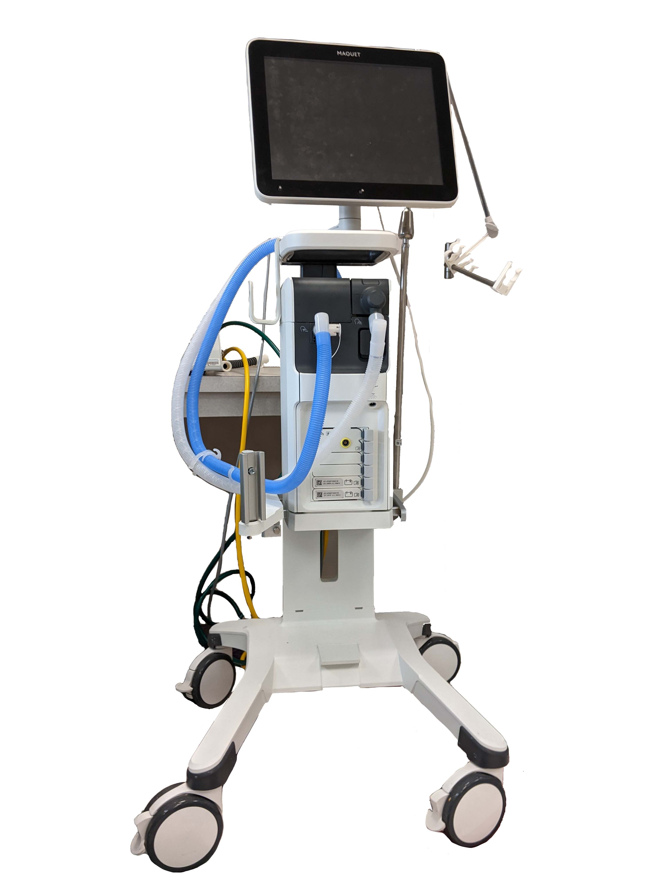
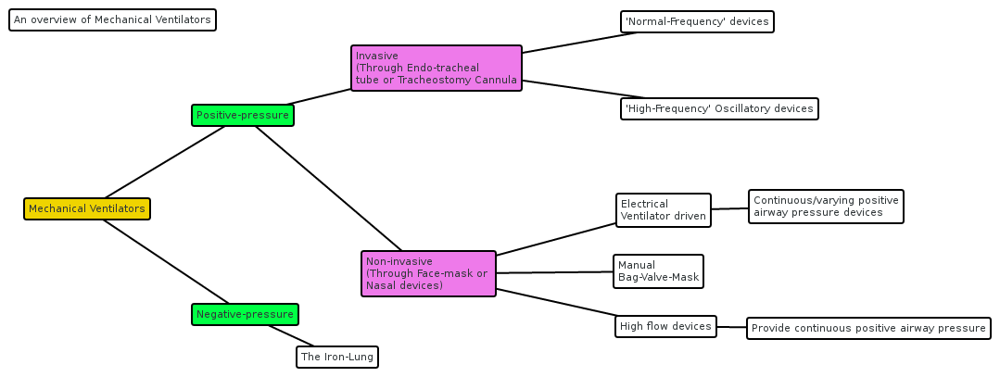

Antes de modos, alarmes e sedação: pressão, fluxo, volume e tempo. Todo modo é contrato; toda garantia cria uma variável livre; toda variável livre precisa de vigilância. Para a Dani.


Um ventilador não “respira pelo paciente” em sentido mágico. Ele move gás porque cria diferença de pressão, controla ou responde ao fluxo, produz volume ao longo do tempo e cobra um preço mecânico do pulmão.
Este módulo existe para martelar a gramática mínima antes do Ventila 1. Se essa gramática fica automática, os modos deixam de ser nomes e passam a ser contratos físicos.
Regra-mãe: antes de mexer no ventilador, diga em voz alta: “o que este modo está prometendo, o que está livre e qual variável pode matar em silêncio?”.
Perguntas curtas, repetitivas de propósito, para transformar a gramática em reflexo.
A linha branca percorre um ciclo. Repare: fluxo constrói volume; pressão paga o custo; tempo decide se a expiração terminou.
Quatro sublabs. Não é para decorar valores; é para sentir a causalidade: ciclo, área, contrato e alarme.
Honestidade do modelo: modelo didático de compartimento único, sem paciente ativo. A pressão é mostrada como custo mecânico simplificado; os números não são prescrição. O objetivo é fixar relações causais que os módulos seguintes refinam.
Oito questões. Alternativas curtas; o aprendizado mora no gabarito estruturado.